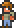

Voodoo Demon
| Drops | |
|---|---|
| Coins: | 10 |
| Item | Rate |
|  Guide Voodoo Doll | 100% |
| Voodoo Demon | |
|---|---|
| | |
| Statistics | |
| Type | Flying Enemy |
| Environment | The Underworld |
| AI Type | Bat |
| Damage | 32, projectile 21 |
| Max Life | 140 |
| Defense | 8 |
The Voodoo Demon can be found in the Underworld, and are identical to Demons in both behavior and differ only slightly in appearance, the only differences being that a small Guide Voodoo Doll hangs from one of their talons and they lack the blue bracelets and anklets that are worn by Demons. Just like normal Demons they take no damage from lava.
Voodoo Demons have 20 more health than standard Demons, but deal the same amount of damage. Instead of having a chance to drop a Demon Scythe spell, they will always drop their Guide Voodoo Doll. Note that killing one over lava will likely cause the doll to fall into the lava, killing the Guide and triggering the Wall Of Flesh spawn, so be careful.
Voodoo Demons are immune to the On Fire! debuff.